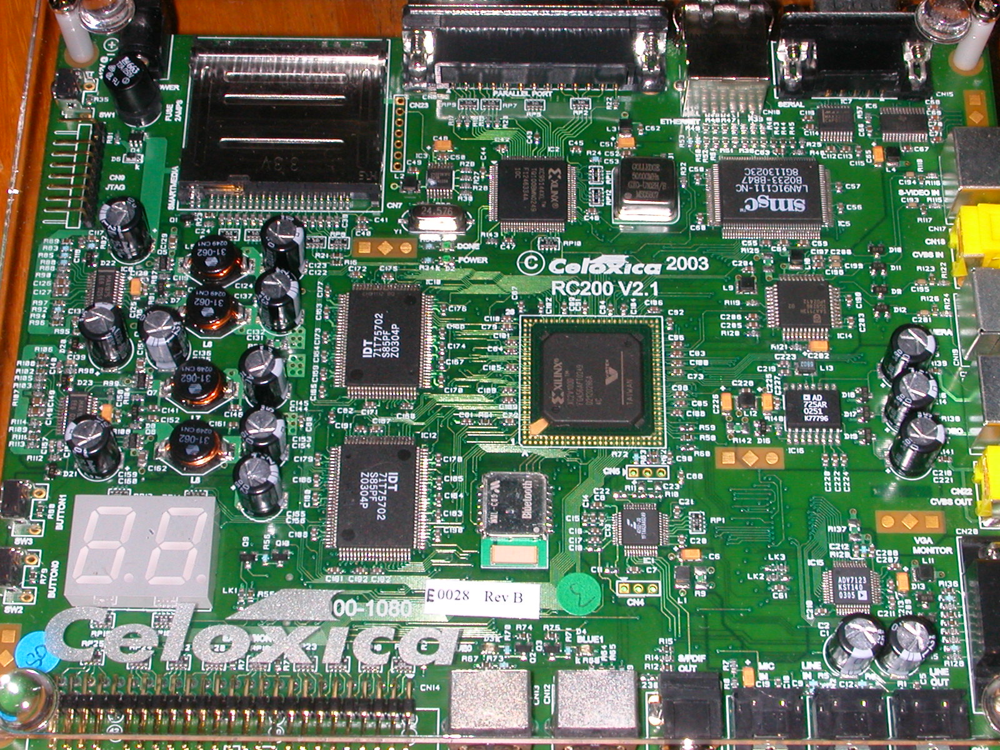
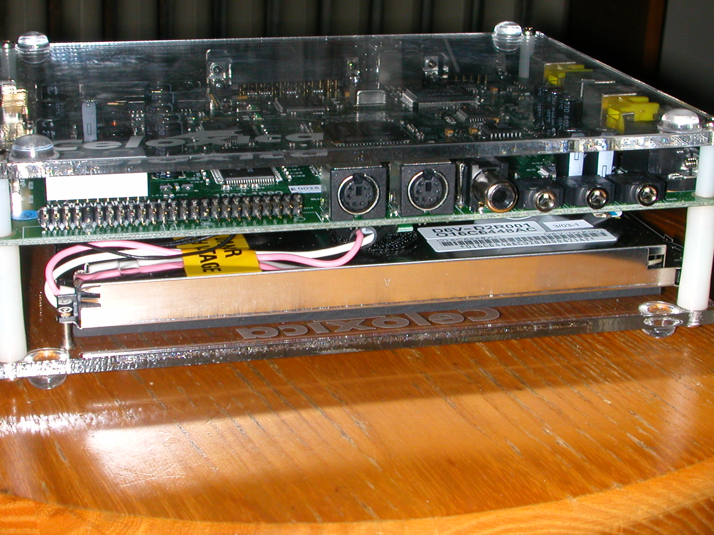
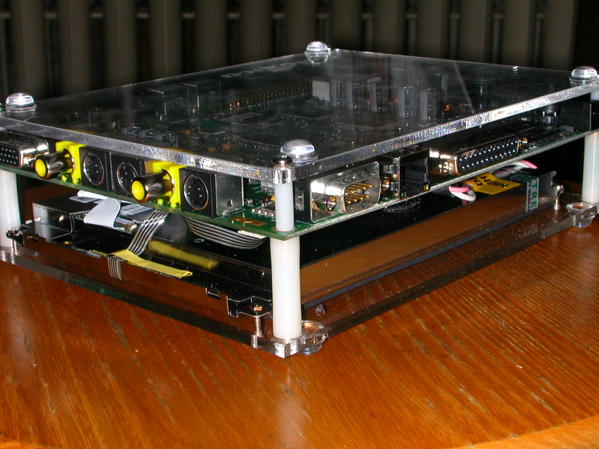
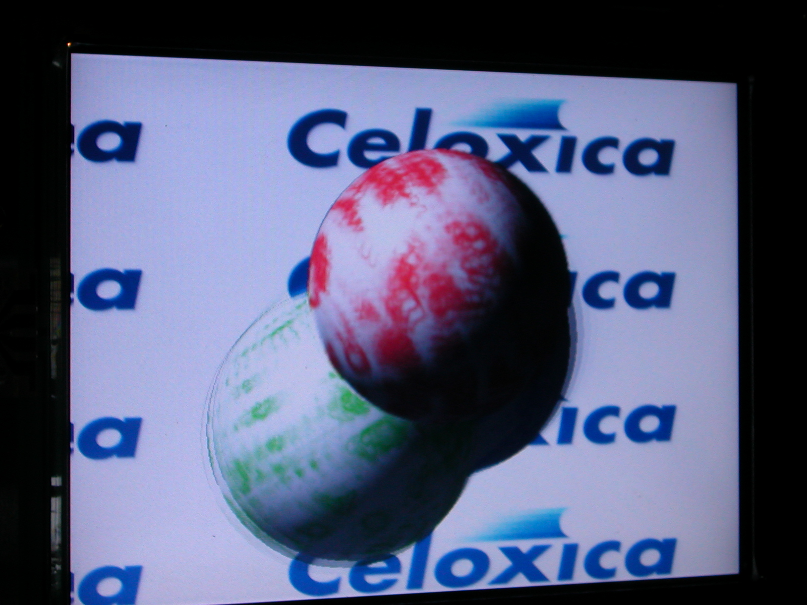

Higher resolution copies of the images in the other page.

Top View

Edge View showing the expansion header,
keyboard and mouse connectors, and four audio connectors.
The edge
of the touchscreen is in the lower part of the picture.

Corner View showing the VGA, CVBS out, S-Video out, camera in, CVBS in, S-Video in, serial, Ethernet, and parallel port connectors.

Touchscreen Demo
The spheres are blurred because they are rotating and moving
around the screen in real time.